Appendix E. Installing a Laminas Web Application to Amazon EC2
Once you have developed a laminas-based website, you'll need to install it on some publicly acessible web server to make it visible to other people.
If you want to install a Laminas Framework based web application, but do not have a web server yet, this tutorial is for you. In this tutorial, we will show how to create a virtual Linux machine in the Amazon Web Services Cloud for free and how to install the Hello World application on that machine.
What is Amazon Web Services?
Amazon Web Services (AWS) is a cloud platform providing scalable and reliable web hosting services. Cloud computing is the delivery of computing and storage capacity as a service to a community of end-recipients. With AWS, you can easily set up a web server and access it in a few minutes. For new users, Amazon provides a free usage tier: you are able to run a web server for one year absolutely for free.
So, with AWS free usage tier you have:
- virtual Linux server (613 MB of memory and 32-bit and 64-bit platform support);
- 30 GB of storage;
- 15 GB of traffic per month;
- a dedicated external IP address.
And all this you can register and prepare for work in half an hour, if you have a credit card that Amazon accepts (Amazon will charge $2 during registration) and a phone (Amazon may request your identity verification).
Creating Amazon Web Services Account
To create new AWS account, you need to open Amazon Web Services page in your browser and click the Sign Up button. The Sign In or Create an AWS Account page appears (shown in the figure below):
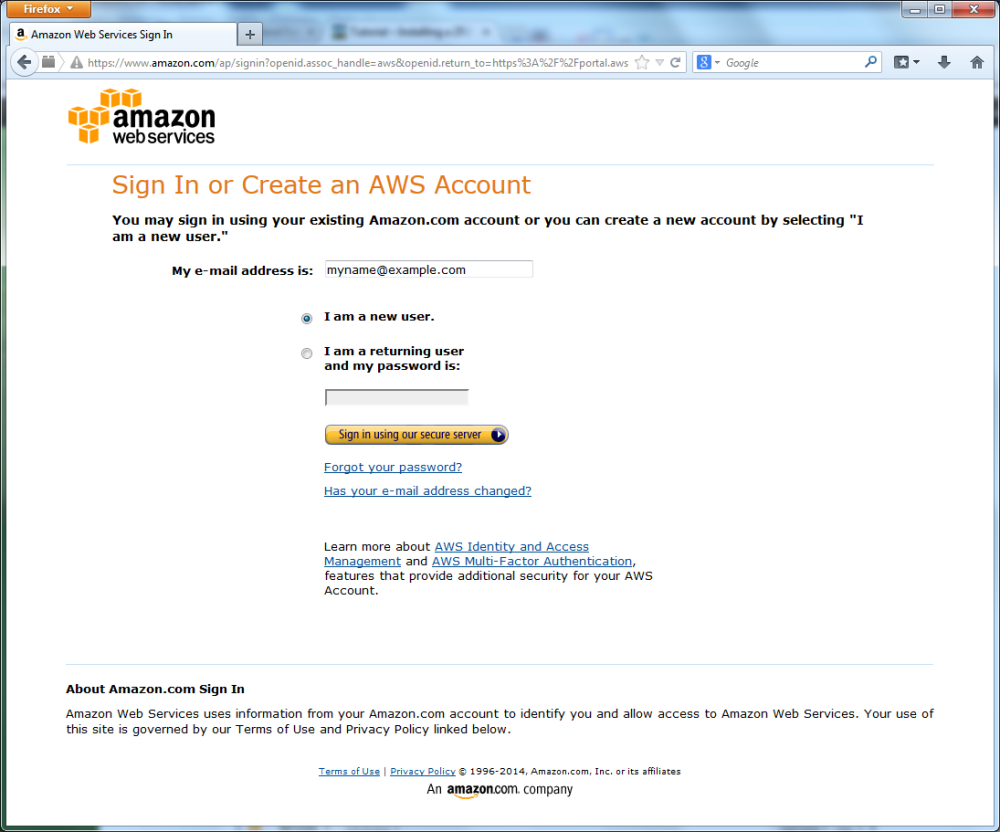
You need to enter your E-mail address, select the I am a new user option and click the Sign in using our secure server button. Then you have to pass through several registration steps: account creation, payment method choice, identity verification and confirmation.
When you are ready with registration, sign into your AWS account, click the My Account/Console button and select AWS Management Console from drop-down menu. AWS Management Console page appears (shown in the figure below):
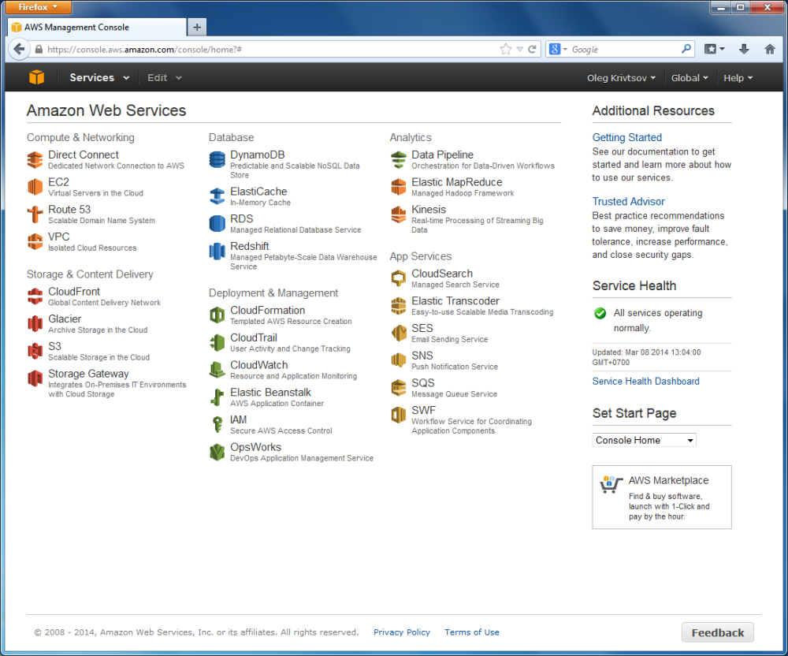
The AWS Management Console displays the products currently accessible by you. You are interested in EC2 product (Elastic Compute Cloud, shortly EC2), because EC2 allows to run a virtual Linux server. In terms of AWS, such a virtual server is also called an EC2 Instance.
Creating a Key Pair
A key pair is used by AWS to authenticate you when you will connect to the EC2 virtual machine. The key pair consists of two keys: the public key and the private key. The private key should be stored in a secret place, and you should not give it to anyone.
Click EC2 icon in your AWS Management Console window. EC2 Console page appears. The page has a side bar menu where you can find several sections like INSTANCES, IMAGES, ELASTIC BLOCK STORE, NETWORK & SECURITY.
In order to securely connect to your virtual server through SSH protocol, you need to create a key pair. To do this, in the EC2 Console side bar menu, under NETWORK & SECURITY section, click the Key Pairs link.
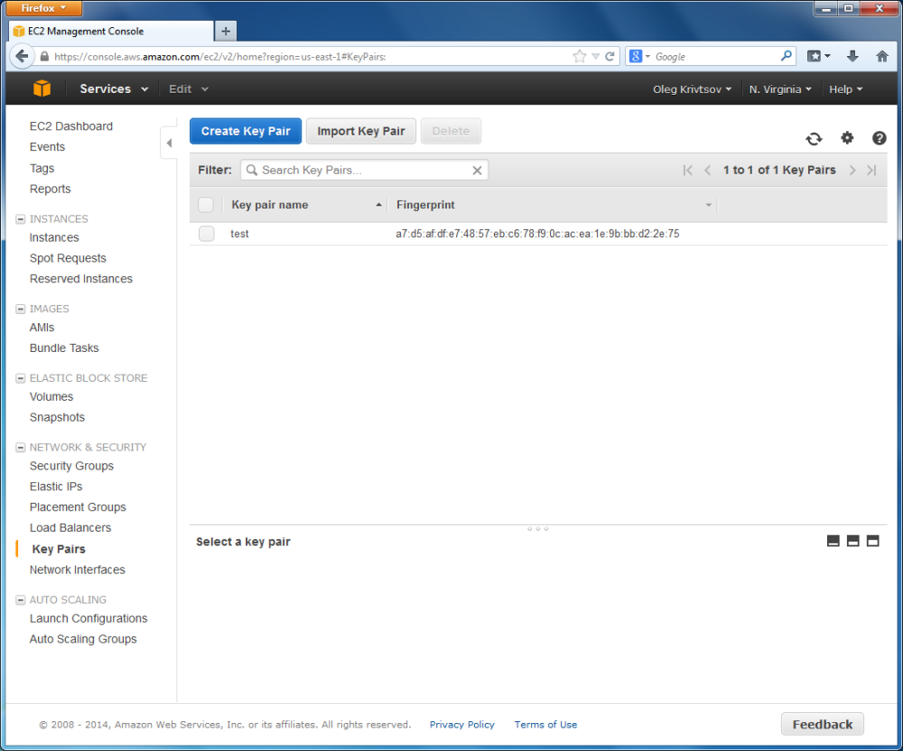
On the page that appears, click the Create Key Pair button and enter the name for your new key pair (for example, enter ‘test’) and press the Create button. When your key pair has been generated, you are offered to download the key as a PEM file. Save the file to some folder – you will need it later.
Launching EC2 Linux Instance
On the EC2 Console side bar menu, under the INSTANCES section, click the Instances link, and on the page that appears, click the Launch Instance button. Then you will have to pass through several Wizard-like pages.
Step 1 – Choose an Amazon Machine Image (AMI)
The first of them is the Choose an Amazon Machine Image (AMI) page (shown in the figure below).
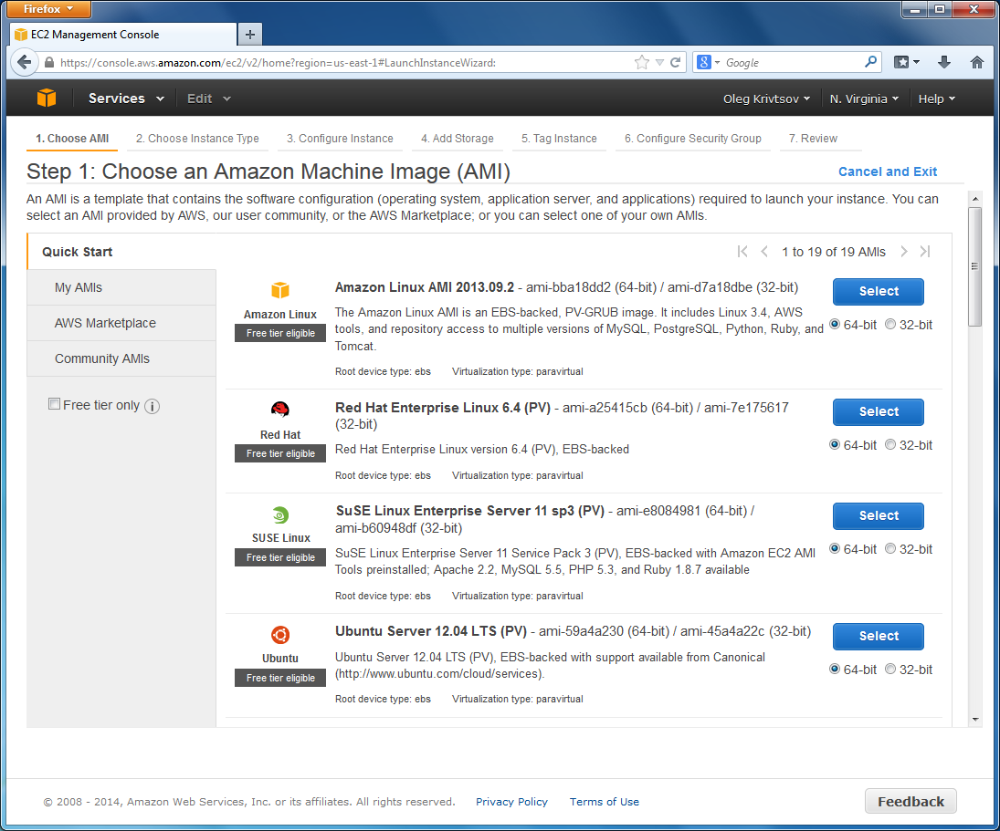
On the page that appears, you need to select the Linux distribution you want to run on the virutal machine. In this tutorial, we choose Amazon Linux AMI, 64-bit.
Amazon Linux is a distribution from Red Hat Linux and Cent OS family. The installation instructions are common between these distributions. For example, all these distributions use the yum package manager. So, if you know how to install a program in Cent OS, you will be able to apply the same steps to install it in Amazon Linux.
In this tutorial, we use Amazon Linux, but you may select another distribution, if you wish.
Click the Select button at the right side of the Amazon Linux AMI option.
Step 2 — Choose an Instance Type
Next, the Choose an Instance Type page appears (see the figure below).
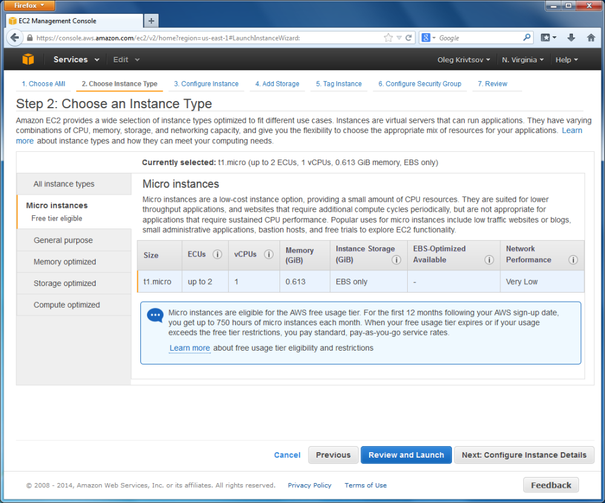
On that page, you can choose the parameters of the virtual machine which affect its performance. In this tutorial, we will use the Micro Instance type, which is available for free usage. Please note that the Micro Instance type is limited in CPU and memory resources, so it is not well suitable for high-load production systems.
Now click the Next button to proceed to the next page.
Step 3 — Configure Instance
The Configure Instance page appears (shown in figure below).
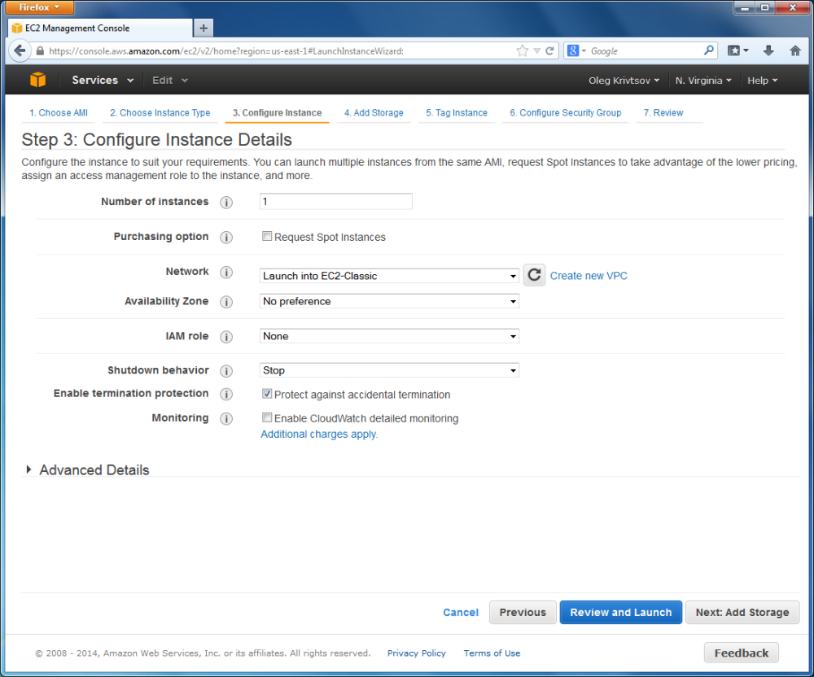
On that page, you can edit instance details. It will be enough to set check on the Enable termination protection check box (this will protect the virtual machine from accidental termination).
Step 4 — Add Storage
Click the Next button to go to the Add Storage page (see figure below for example).
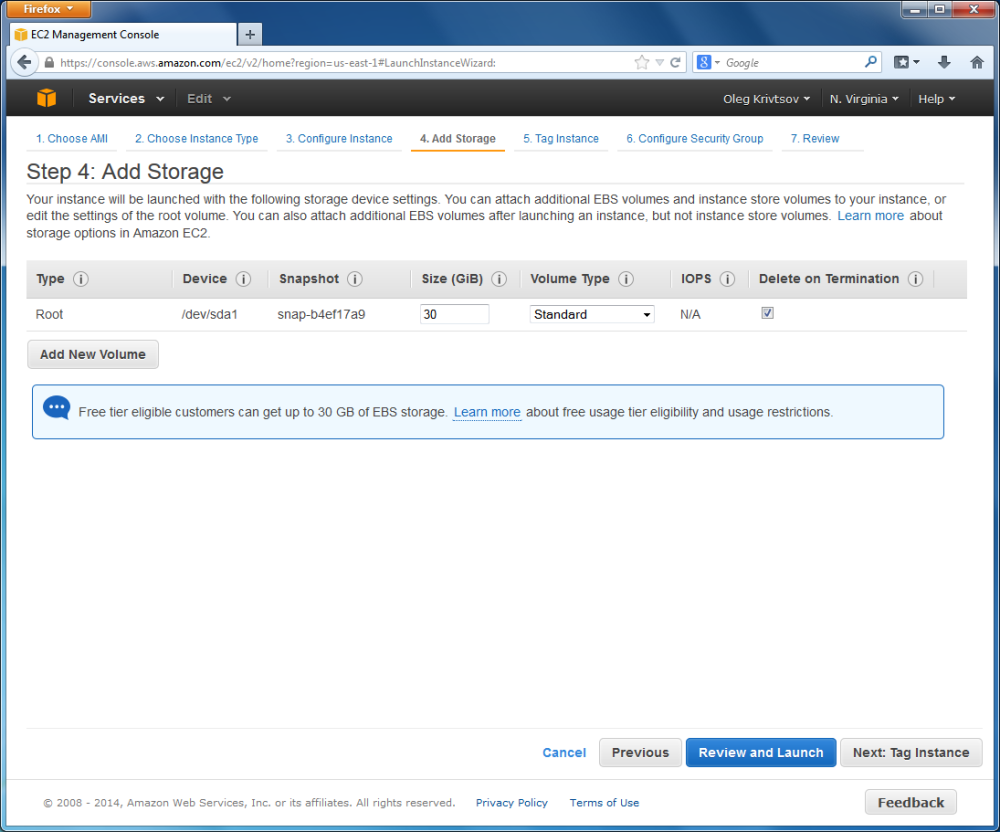
On that page, you can adjust the size of the virtual hard disk drive attached to your virtual machine (for the free usage, you are able to allocate up to 30 GB of storage space). This disk drive is part of EBS service (Elastic Block Storage). It is very reliable and automatically backed up to protect your data from accidental loss.
Step 5 — Tag Instance
Click the Next button to go to the next page called Tag Instance.
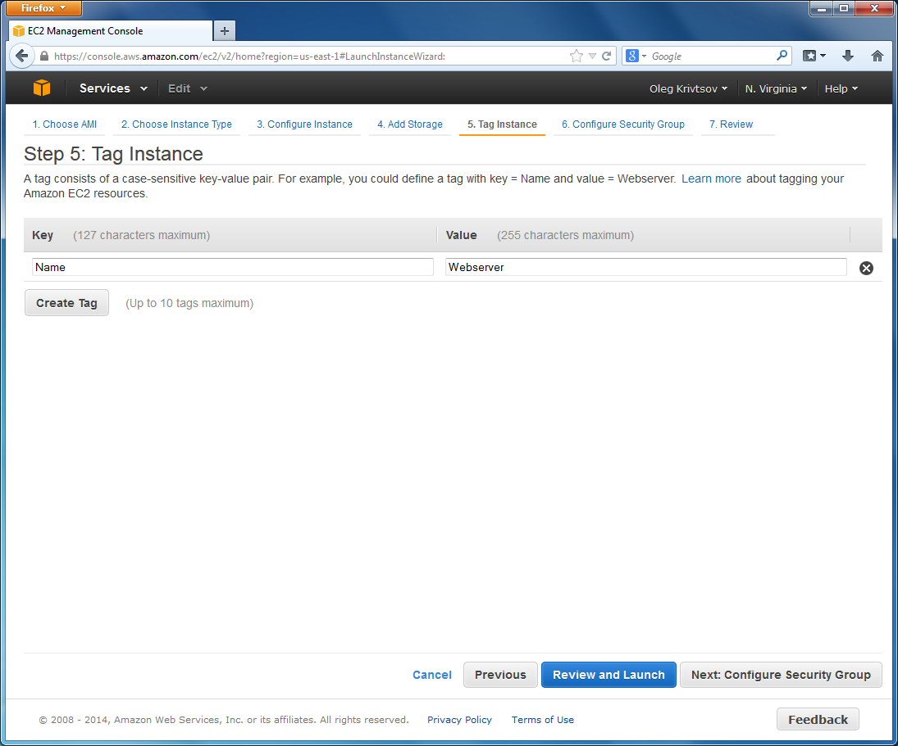
On that page, you will be able to add one or several tags to distinguish this EC2 instance from the others (in the future, you may launch more instances in your account). For example, add the Name tag and set its value to "Webserver". This will help you to remember that this instance's purpose is to run the Apache Web Server.
Step 6 — Security Group
Click the Next button to go to the next page called Security Group (see below).
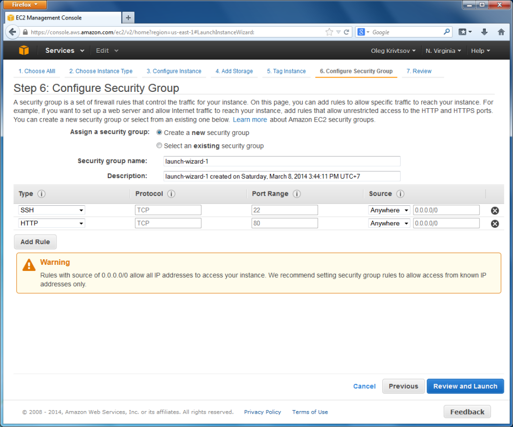
On the Security Group page, you need to configure the security group rules (firewall) for the EC2 instance. The rules define what ports will be open for inbound access. By default, your EC2 instance allows access through SSH (port 22). You also need to add a rule allowing to access port 80 (HTTP). To do this, click the Add Rule button and enter 80 into the Port range field.
Step 7 — Review Instance Launch
Click the Next button to go to the last page named Review Instance Launch.
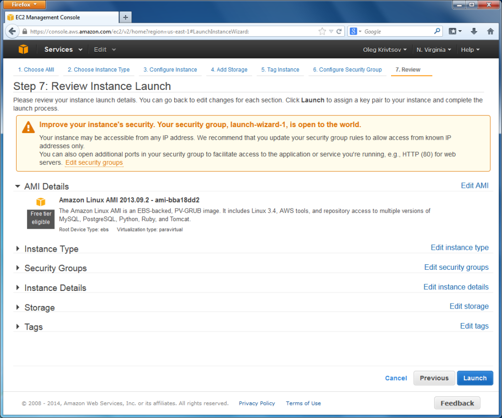
On this page you are able to review the virtual machine settings before you launch it. When you are ready, click the Launch button. The Select an existing keypair of create a new keypair pop-up window appears.
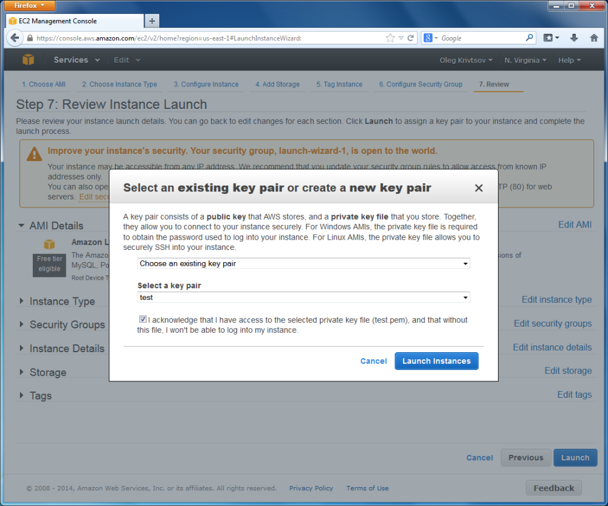
In this window, select the 'test' keypair from the list of existing keypairs (we have created the 'test' keypair earlier) and click the Launch Instances button to trigger the instance launch process.
Now you should be able to see your instance on the Instances page (see the figure below).
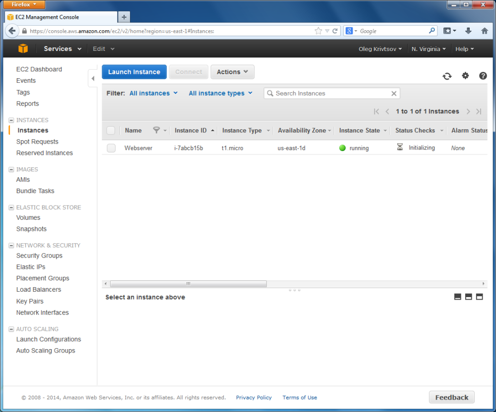
Assigning an IP Address to the Instance
Every web server on the Internet has a dedicated IP address by which others can refer to it. Next, you need to assign an IP address to the EC2 instance you have just created. To do this, click the Elastic IPs link in the side bar menu (under NETWORK & SECURITY section). On the page that appears, click Allocate New Address button. In the appeared window, click the Allocate button. The new IP address is now displayed in the list of Elastic IPs.
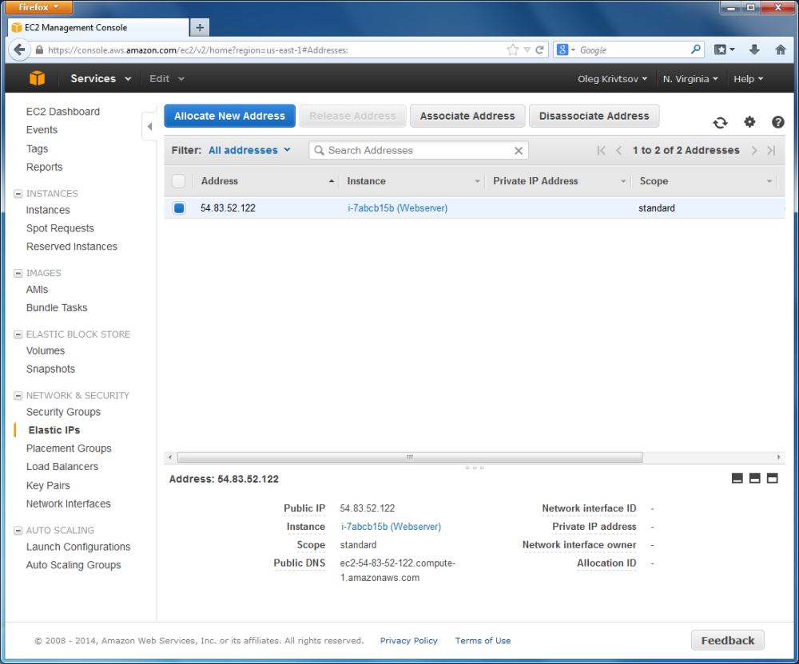
You must immediately assign the created IP address to your instance. To do this, click the check box to the left of your IP address and click the Associate Address button above the IP address list. In the window that appears, select the instance name and click the Yes, Associate button.
Connecting to EC2 Instance through SSH
Next we want to connect to the virtual server we’ve just created. In this tutorial, we will use PuTTY – a free implementation of Telnet and SSH for Windows and Unix platforms.
Download PuTTY archive from this link. Then unzip it to some folder.
You need to import the key pair you have downloaded earlier as a PEM file. To do this, run PUTTYGEN.EXE from PuTTY distribution. PuTTY Key Generator window appears. In this window, click the Load button and choose your PEM file to load your existing key pair. Next enter some password to protect your key (see the image below). Remember the password, because it will be needed later.
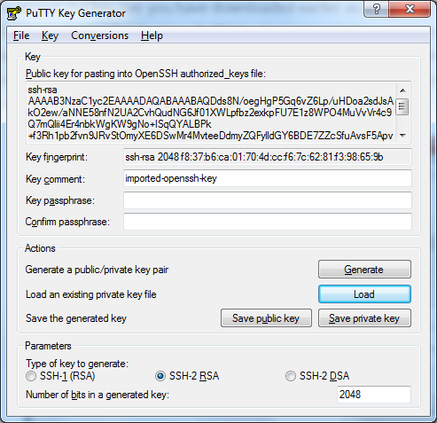
Finally, click the Save private key button to save your password-protected key as a PPK file.
Now you are ready to connect to your EC2 instance. Run PUTTY.EXE from PuTTY distribution. The PuTTY Configuration window appears. In that window, select the Connection->SSH->Auth category from the side bar menu and enter the path to your PPK file into the Private key for connection field (see the figure below).
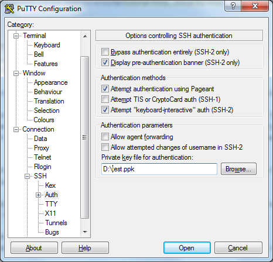
Select Window->Translation category from side bar menu and select the UTF-8 encoding from drop-down list (see the figure below for example):
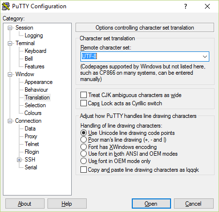
Select Session category from side bar menu. Into the Host name (or IP address) field, enter the IP address you assigned to your EC2 instance. In the Saved sessions field, enter 'webserver' and press Save button. Now the information you entered is saved, so you don't have to enter it each time you connect.
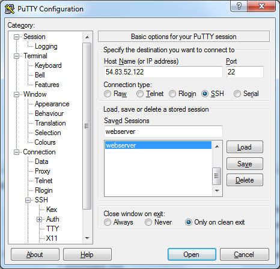
Now double-click the webserver item in the list of saved sessions. Terminal window appears. You need to enter 'ec2-user' as your login and press Enter. Then enter the password that you used when creating the PPK file and press Enter again. If everything is OK, you should be able to see the prompt like in the figure below:
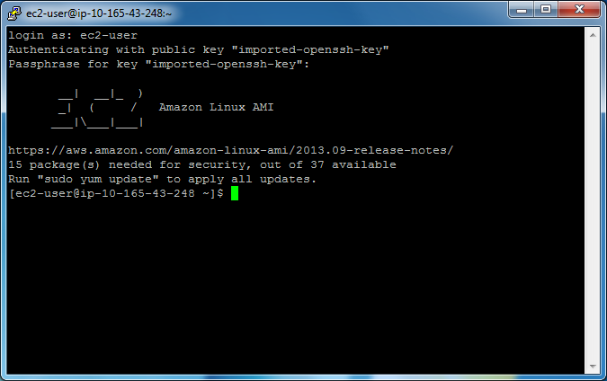
In the shell terminal window, you can type commands and see the results of the command execution.
Installing Apache HTTP Server and PHP Engine
For Laminas Framework based website to run, you need to have a web server and the PHP engine installed. The next thing we plan to do is installing Apache Web Server and PHP.
First, it is recommended that you update the system by typing the following shell command:
sudo yum update
You do not have to type all commands manually, instead you can copy and paste them. Select the command in this window and copy it into the clipboard (CTRL+C), then click your mouse's right button over the PuTTY terminal window to insert the text.
To install Apache HTTP Server, type the following command:
sudo yum install httpd
Install the PHP engine:
sudo yum install php
And finally, install the PHP engine’s GD extension (this extension is required by the Hello World web application to run correctly):
sudo yum install php-gd
Add Apache HTTP Server to system autorun and start it:
sudo chkconfig --level 235 httpd on
sudo service httpd start
To check that Apache Web Server works, enter the IP address of your EC2 instance in your web browser’s navigation bar. If everything is OK, you should see the page like below:
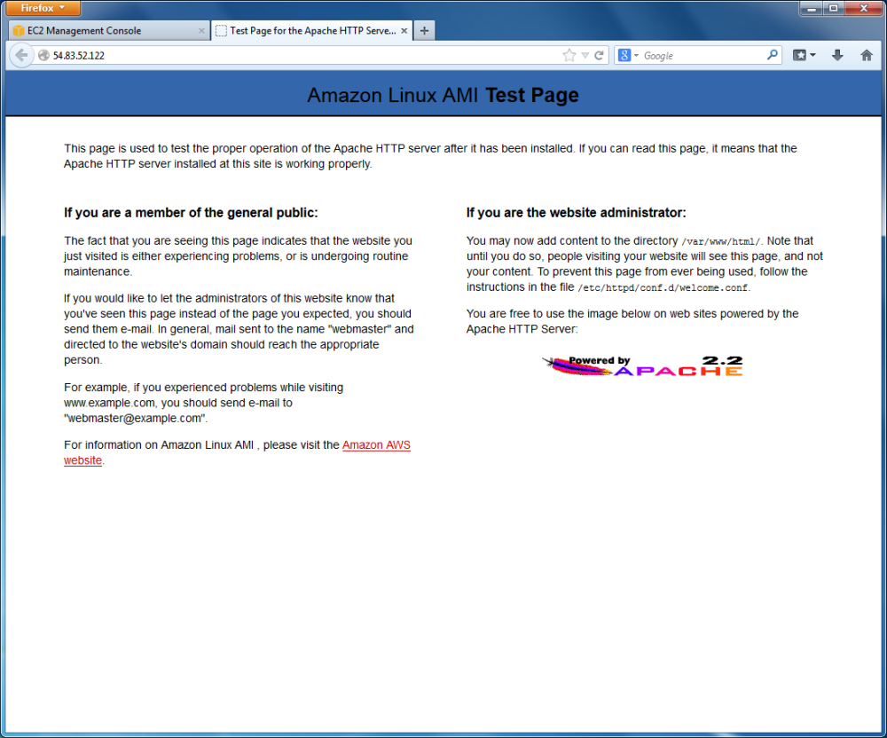
Next, we will edit the PHP config file to set the time zone settings (in this tutorial, we will use our favorite Midnight Commander editor for this purpose).
Install MC:
sudo yum install mc
Open the php.ini file with MC:
sudo mcedit /etc/php.ini
Set your time zone settings (replace YOUR_TIMEZONE placeholder with your time zone, for example, UTC or America/New_York):
date.timezone = YOUR_TIMEZONE
When ready, save your changes by pressing the F2 key and then press F10 to exit from Midnight Commander’s editor.
Installing the Hello World Web Application
To get the Hello World application code, we will download the code samples archive bundled with this book from GitHub.
The following shell commands will create directory for downloads and make it current:
mkdir ~/downloads
cd ~/downloads
Download the code samples archive bundled with the book by typing the following:
wget https://github.com/olegkrivtsov/using-laminas-book-samples/archive/master.zip
Unpack the archive with the unzip command and move the files to web server’s document root directory:
unzip master.zip
sudo mv using-laminas-book-samples-master/* /var/www/html
Next, set file and directory permissions to allow Apache read and write access to the Hello World application files:
sudo chmod -R 755 /var/www/html/helloworld
sudo chown -R apache:apache /var/www/html/helloworld
Creating Virtual Host
Now we are almost ready to get our Hello World website live! The last thing we are going to do is configuring an Apache virtual host. To do that, we will edit the httpd.conf file:
sudo mcedit /etc/httpd/conf/httpd.conf
If you scroll the file down to its end, you may encounter the commented text block as follows:
#
# Use name-based virtual hosting.
#
#NameVirtualHost *:80
#
# NOTE: NameVirtualHost cannot be used without a port specifier.
# (e.g. :80) if mod_ssl is being used, due to the nature of the
# SSL protocol.
#
#
# VirtualHost example:
# Almost any Apache directive may go into a VirtualHost container.
# The first VirtualHost section is used for requests without a known
# server name.
#
#<VirtualHost *:80>
# ServerAdmin webmaster@dummy-host.example.com
# DocumentRoot /www/docs/dummy-host.example.com
# ServerName dummy-host.example.com
# ErrorLog logs/dummy-host.example.com-error_log
# CustomLog logs/dummy-host.example.com-access_log common
#</VirtualHost>
To add a virtual host, you’ll have to uncomment this block and add some rules in it. After your changes, this text block will look like below:
#
# Use name-based virtual hosting.
#
NameVirtualHost *:80
#
# NOTE: NameVirtualHost cannot be used without a port specifier.
# (e.g. :80) if mod_ssl is being used, due to the nature of the
# SSL protocol.
#
#
# VirtualHost example:
# Almost any Apache directive may go into a VirtualHost container.
# The first VirtualHost section is used for requests without a known
# server name.
#
<VirtualHost *:80>
ServerAdmin yourname@yourserver.com
DocumentRoot /var/www/html/helloworld/public
<Directory /var/www/html/helloworld/public>
DirectoryIndex index.php
AllowOverride All
Require all granted
</Directory>
</VirtualHost>
When ready, press F2 to save changes and F10 to exit from Midnight Commander.
Restart Apache to apply your changes:
sudo service httpd restart
Installing Laminas Framework with Composer
Now we will use Composer to install Laminas Framework code and initialize autoloader. First, go to the directory where you installed the Hello World web application and type the self-update command to update the Composer:
cd /var/www/html/helloworld
sudo php composer.phar self-update
The expected output of this command is the following:
Updating to version 604a65cc31f3e5d8a2b96802135ac24434e87678.
Downloading: 100%
Next, type the install command to make Composer to download and install Laminas Framework code:
sudo php composer.phar install
The expected output will look like as the following:
Loading composer repositories with package information
Installing dependencies (including require-dev) from lock file
Warning: The lock file is not up to date with the latest changes in composer.json. You may be getting outdated dependencies. Run update to update them.
- Installing laminas/laminas (2.2.4)
Downloading: 100%
Skipped installation of bin/classmap_generator.php for package laminas/laminas: name conflicts with an existing file
Skipped installation of bin/pluginmap_generator.php for package laminas/laminas: name conflicts with an existing file
Skipped installation of bin/templatemap_generator.php for package laminas/laminas: name conflicts with an existing file
laminas/laminas suggests installing doctrine/annotations (Doctrine Annotations >=1.0 for annotation features)
laminas/laminas suggests installing ext-intl (ext/intl for i18n features (included in default builds of PHP))
laminas/laminas suggests installing ircmaxell/random-lib (Fallback random byte generator for Laminas\Math\Rand if OpenSSL/Mcrypt extensions are unavailable)
laminas/laminas suggests installing ocramius/proxy-manager (ProxyManager to handle lazy initialization of services)
laminas/laminas suggests installing laminas/Laminaspdf (LaminasPdf for creating PDF representations of barcodes)
laminas/laminas suggests installing laminas/Laminasservice-recaptcha (LaminasService\ReCaptcha for rendering ReCaptchas in Laminas\Captcha and/or Laminas\Form)
Generating autoload files
Results
Once the above steps are done, you will be able to open the Hello World website in your web browser. If you type the IP address of your EC2 instance in the browser, you should be able to see the following page:
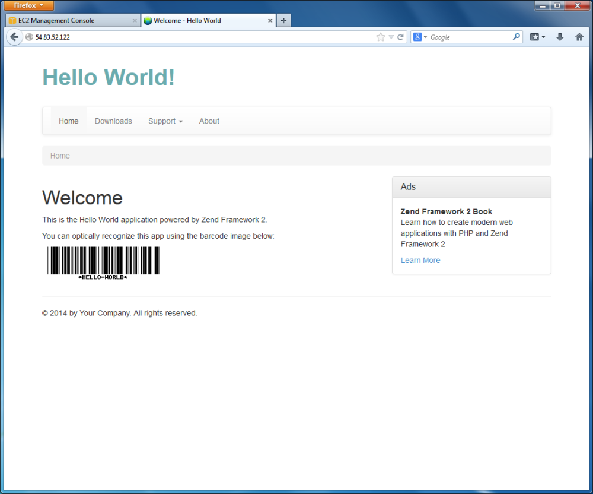
Congratulations! You have completed this tutorial and now you should be able to install any Laminas Framework based website to an Amazon EC2 instance.
Summary
When your laminas-based website is ready, you'll need to install it on a publicly acessible web server to make it visible to other people.
In this tutorial, we have shown how to install a laminas-based website to a Amazon EC2 virtual machine. First, you log in to Amazon Management Console and create a EC2 instanse. Then you connect to the newly created VM and install Apache HTTP server and PHP engine. Finally, you copy your website files and install dependencies with Composer. That simple!